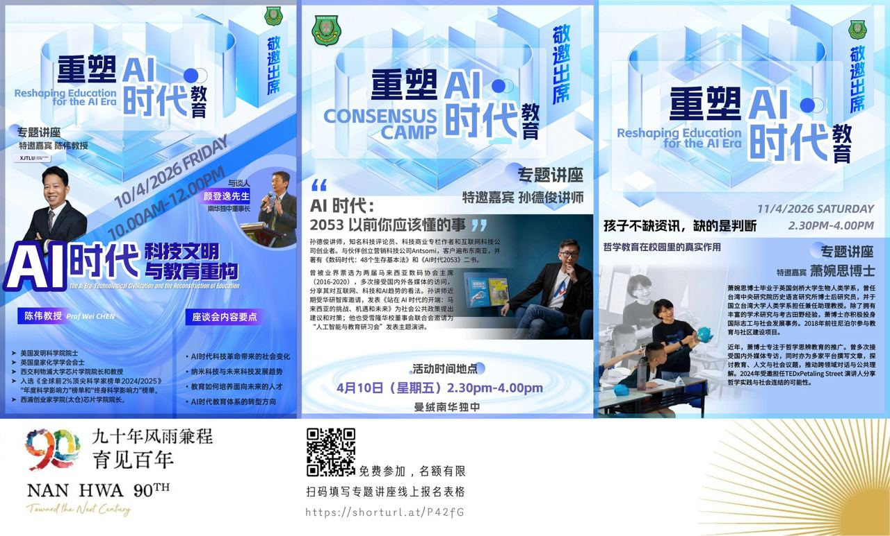

🏛️ 南华独中 90周年校庆 🏛️
🏛️ 南华独中 90周年校庆 🏛️
九十年风雨兼程 育见百年
📜 诚邀教育同仁及各界人士出席参与 🌐 重塑AI.时代教育 研讨会🌐 共同探讨在技术与人文的碰撞下，教育如何实现本质的重塑与跨越。
📍深度课题 · 核心解析📍
● AI 时代下 教育解构与重塑
● 教育者素养
● 从哲学教育中学会判断
________________________________
🏢 研讨会日程安排
________________________________
📡 AI 时代，科技文明与教育重构
● 陈伟教授 Professor Wei Chen
● 2026 年 4 月 10 日（星期五 ）
● 10.00am - 12.00pm
________________________________
🧩 AI 时代：2053 以前你应该懂的事
● 孙德俊讲师 Mr. Serm Teck Choon
● 2026 年 4 月 10 日（星期五 ）
● 2.30pm - 4.00pm
________________________________
☀️ 孩子不缺信息，缺的是判断
——哲学教育在校园里的真实作用 ☀
● 萧婉思博士 Dr. Siew Yun Ysi
● 2026 年 4 月 11 日（星期六）
● 2.30pm - 4.00pm
________________________________
📝 报名及联系信息：
有意报名者欢迎扫码或 👇 点击留言处👇 首条评论的链接。若有疑问请于办公时间内联系本校查询：
☎️ 011-6464 6267 / 011-6162 6358
